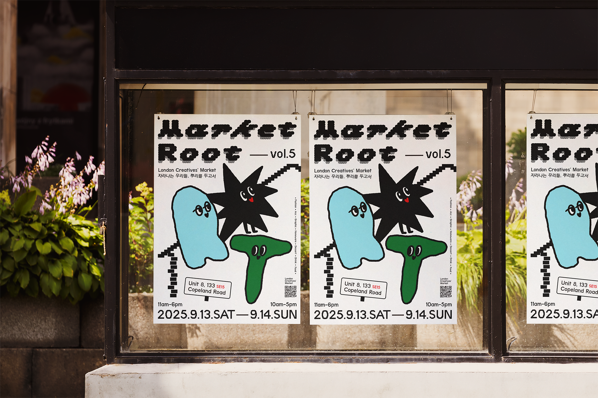
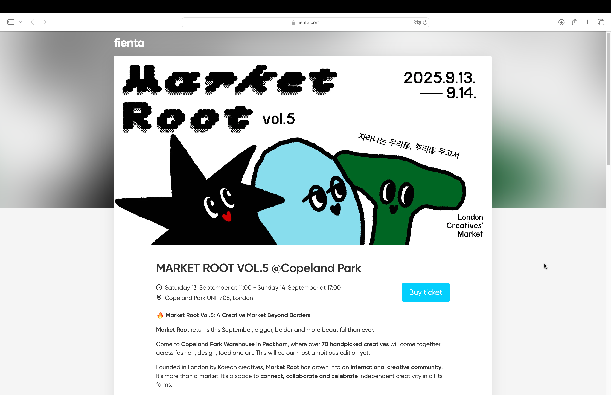

-
1 /4

2 /4
3 /4

4 /4
prev next Commissioned Project
Client: Market Root
2025
Identity Design / PosterMarket Root is a London’s biggest Korean & International creatives market - A thoughtfully curated destination for fashion, design, and culture. This identity-building project aims to strengthen the market’s and community’s presence as it rapidly grows.
How can a design grab attention on London’s ever-changing, creative streets? To address this challenge, we created a simple yet kitsch character to establish a clear visual identity. Given the market’s constantly changing participants, the character serves to anchor and define the market’s identity, making it instantly recognisable regardless of location or lineup.
Market Root는 런던 최대 규모의 한국 및 인터내셔널 크리에이티브 마켓으로, 패션·디자인·컬처를 한 곳에서 경험할 수 있는 큐레이티드 플랫폼입니다. 본 프로젝트는 빠르게 성장하는 마켓과 커뮤니티의 존재감을 더욱 강화하기 위한 아이덴티티 구축 작업입니다.
끊임없이 변화하는 런던의 창의적인 거리에서, 어떻게 사람들의 시선을 사로잡을 수 있을까? 이 질문에서 출발해, 우리는 단순하면서도 키치한 캐릭터를 중심으로 명확한 비주얼 아이덴티티를 설계했습니다. 참여자가 매번 달라지는 마켓의 특성상, 이 캐릭터는 Market Root의 정체성을 고정시키고 정의하는 역할을 합니다. 덕분에 장소나 라인업에 관계없이 즉각적으로 인식 가능한 브랜드로 자리 잡을 수 있게 되었습니다.Footnotes
1 Posters of page 7 to 9 are b-cut images